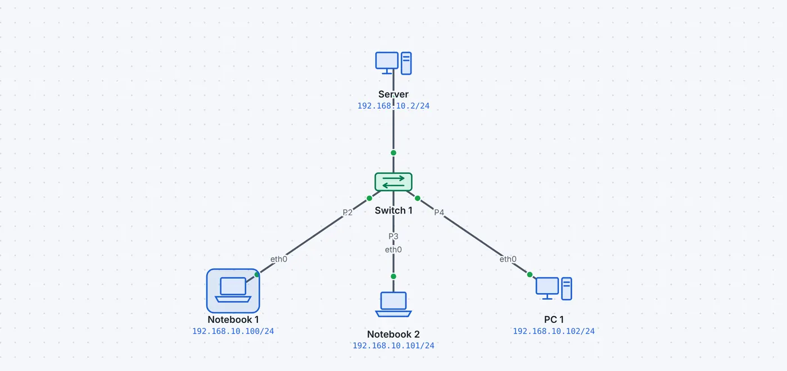
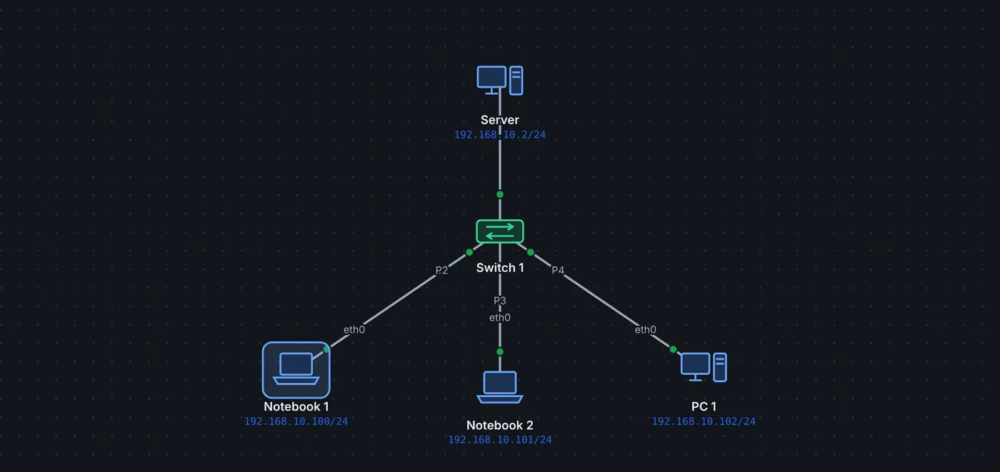

Wozu
Hundert Geräte von Hand zu konfigurieren ist mühsam und fehleranfällig. Ein DHCP-Server verteilt Adresse, Maske, Gateway und DNS-Server automatisch, für eine begrenzte Zeit (Lease).
DORA
| Schritt | von → an | Inhalt |
|---|---|---|
| Discover | Client → Broadcast | «Ist hier ein DHCP-Server?» (Client hat noch keine Adresse: 0.0.0.0) |
| Offer | Server → Client | Angebot: Adresse, Maske, Gateway, DNS, Lease-Dauer |
| Request | Client → Broadcast | «Ich nehme das Angebot dieses Servers» |
| Ack | Server → Client | Bestätigung; ab jetzt gilt die Adresse |
Nach der halben Lease-Dauer erneuert der Client. Mit ipconfig /release gibt er die Adresse zurück, mit /renew holt er eine neue. Ohne Antwort wiederholt er das Discover und meldet nach drei Versuchen «kein Server».


Feste Zuweisungen und Relay
- Reservierung: Ein Gerät mit einer bestimmten MAC-Adresse bekommt immer dieselbe Adresse, z.B. ein Drucker.
- DHCP-Relay: DHCP-Anfragen sind Broadcasts und kommen nicht über Router. Ein Router oder Layer-3-Switch mit
ip helper-addressleitet sie an einen zentralen Server weiter und trägt das Netz der Anfrage ein (GIADDR). Der Server wählt danach den passenden Bereich. - Pools auf dem Router: Router und Layer-3-Switches können auch selbst DHCP-Server sein (
ip dhcp pool).
Typische Fehler
Der Bereich ist zu klein (Client-Gruppen!), überschneidet sich mit festen Adressen, oder das verteilte Gateway stimmt nicht. Clients ohne Antwort zeigen in ipconfig keine gültige Adresse.
So geht es in leyoNET
Derselbe Text wie in der Hilfe der App (Taste F1).
DHCP
Ein DHCP-Server verteilt Adressen automatisch in vier Schritten: Discover (Client ruft per Broadcast), Offer, Request, Ack. Der Server gibt Adresse, Maske, Gateway und DNS mit. Liegt der Server in einem anderen Netz, leitet ein Router mit DHCP-Relay die Anfragen weiter. Mit einer festen Zuweisung (Reservierung) bekommt ein bestimmtes Gerät, erkannt an seiner MAC-Adresse, immer dieselbe Adresse, z.B. ein Drucker oder eine Workstation; sie darf auch ausserhalb des Bereichs liegen. DHCP-Pools auf Router oder Layer-3-Switch (Reiter «DHCP», «ip dhcp pool»): je Netz ein Pool mit Netz, Gateway und DNS; ausgeschlossene Adressen («ip dhcp excluded-address») werden nie vergeben.
Private und öffentliche Adressen
- Privat (10/8, 172.16/12, 192.168/16): nur im eigenen Netz, ins Internet über NAT/PAT
- CGNAT (100.64/10): vom Provider vergeben, der nochmals übersetzt (Carrier-Grade NAT)
- Öffentlich: weltweit eindeutig
Mit A zeigt die Fläche alle Adressen farbig. Ein Bereich «Öffentliches Netz» markiert Netze mit öffentlichen Adressen, z.B. eine DMZ.
Beispiel ansehen
- DHCP (DORA)
Ein Server vergibt drei Clients ihre Adressen.
Discover, Offer, Request, Ack für jeden Client; danach zeigt «ipconfig /all» die bezogene Adresse.
«Live ansehen» öffnet das Netz in leyoNET, die Simulation läuft in einer Schleife. In der App findest du es unter Datei → Demo-Netze, mit Führung Schritt für Schritt.
Üben
- ★★★☆☆ Adressen per DHCP verteilen · 4 Ziele · Arbeitsblatt
- ★★★☆☆ UE01 Netzwerkdienste: Firmennetz Watch SA mit DHCP · 18 Ziele · Arbeitsblatt
- ★★★☆☆ UE08 DHCP auf dem Layer-3-Switch · 5 Ziele · Arbeitsblatt
- ★★★★☆ UE09 DHCP extern: Zentraler Server mit Relay · 6 Ziele · Arbeitsblatt
- ★★★☆☆ Protokollanalyse – Auftrag 2: DHCP · 5 Ziele · Arbeitsblatt
In leyoNET unter Werkzeuge → Aufgaben-Katalog. Jede Übung prüft sich selbst.
Was leyoNET vereinfacht
| Protokoll | Schicht | Vereinfachung in der Simulation |
|---|---|---|
| DHCP | 7 | Discover/Offer/Request/Ack, Relay (giaddr); ohne Antwort wiederholt der Client das Discover nach 4 s und 8 s (doppelte Wartezeit, RFC 2131 Abschnitt 4.1) und meldet nach dem dritten Versuch «kein Server»; Erneuerung nach halber Lease-Dauer; feste Zuweisungen (Reservierung nach MAC-Adresse, auch ausserhalb des Bereichs); Pools auf Router und Layer-3-Switch («ip dhcp pool», ausgeschlossene Adressen); Offer und Ack gehen als Broadcast (Client ohne Adresse) |